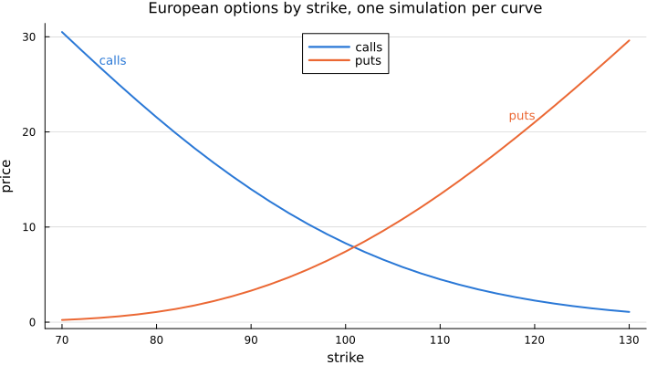

Exotic options and greeks
This tutorial goes through the path dependent payoffs and the ways of computing sensitivities.
using FinancialMonteCarlo, DualNumbers, Plots
default(size = (720, 400), linewidth = 2, framestyle = :axes, grid = :y, gridalpha = 0.25, titlefontsize = 11, guidefontsize = 10, legendfontsize = 9)
S0, K, r, T, d = 100.0, 100.0, 0.02, 1.0, 0.01
rfCurve = ZeroRate(r)
model = BlackScholesProcess(0.2, Underlying(S0, d))
mcConfig = MonteCarloConfiguration(10_000, 50)MonteCarloConfiguration{FinancialMonteCarlo.StandardMC, FinancialMonteCarlo.SerialMode, FinancialMonteCarlo.SeededRNG{Random.MersenneTwister}}(10000, 50, FinancialMonteCarlo.StandardMC(), FinancialMonteCarlo.SerialMode(), FinancialMonteCarlo.SeededRNG{Random.MersenneTwister}(0, Random.MersenneTwister(0xd4cb68d3609a504225812fe94b19023c)), true)Path dependent payoffs
Barrier, Asian, American and Bermudan options are priced exactly like European ones. American and Bermudan options use the Longstaff-Schwartz regression.
exotics = [
BarrierOptionDownOut(T, K, 90.0),
BarrierOptionUpIn(T, K, 120.0),
DoubleBarrierOption(T, K, 80.0, 130.0),
AsianFixedStrikeOption(T, K),
AsianFloatingStrikeOption(T),
AmericanOption(T, K, false),
BermudanOption(collect(0.25:0.25:T), K, false),
BinaryEuropeanOption(T, K),
]
pricer(model, rfCurve, mcConfig, exotics)8-element Vector{Float64}:
7.187455960719225
6.859177043778294
3.3769701546996265
4.672417467928436
4.754964989730084
7.500172009337483
7.4672794896162555
0.46980922411592774Smiles
A smile is a set of European (or binary) options with the same maturity and different strikes, all priced on the same paths.
smile = FinancialMonteCarlo.EuropeanOptionSmile(T, [80.0, 90.0, 100.0, 110.0, 120.0], [false, false, true, true, true])
pricer(model, rfCurve, mcConfig, smile)5-element Vector{Float64}:
1.0694782757909118
3.3093042659644585
8.287765753070481
4.499577234178361
2.2704452433868694A smile prices many strikes on a single simulation, so a whole price curve costs one run:
strikes = collect(70.0:2.0:130.0)
calls = pricer(model, rfCurve, mcConfig, FinancialMonteCarlo.EuropeanOptionSmile(T, strikes, fill(true, length(strikes))))
puts = pricer(model, rfCurve, mcConfig, FinancialMonteCarlo.EuropeanOptionSmile(T, strikes, fill(false, length(strikes))))
plot(strikes, calls; color = "#2a78d6", label = "calls", legend = :top, xlabel = "strike", ylabel = "price", title = "European options by strike, one simulation per curve")
plot!(strikes, puts; color = "#eb6834", label = "puts")
annotate!([(strikes[3], calls[3], text("calls", 9, "#2a78d6", :left, :bottom)), (strikes[end-5], puts[end-5], text("puts", 9, "#eb6834", :right, :bottom))])
Bump and reprice
delta and rho compute finite differences with respect to the spot and the zero rate, re-using the same seed for both evaluations.
euOption = EuropeanOption(T, K)
delta(model, rfCurve, mcConfig, euOption)0.5526868562810705rho(model, rfCurve, mcConfig, euOption)46.98092004318255Automatic differentiation
Any parameter can be a dual number: the derivative propagates through simulation and payoff. Here the dual part of the spot gives the delta,
model_dual_spot = BlackScholesProcess(0.2, Underlying(dual(S0, 1.0), d))
pricer(model_dual_spot, rfCurve, mcConfig, euOption).epsilon0.5526868816466326and the dual part of the volatility gives the vega.
model_dual_vol = BlackScholesProcess(dual(0.2, 1.0), Underlying(S0, d))
pricer(model_dual_vol, rfCurve, mcConfig, euOption).epsilon38.66940554301534ForwardDiff.jl and ReverseDiff.jl gradients work the same way, see Automatic differentiation.
This page was generated using Literate.jl.